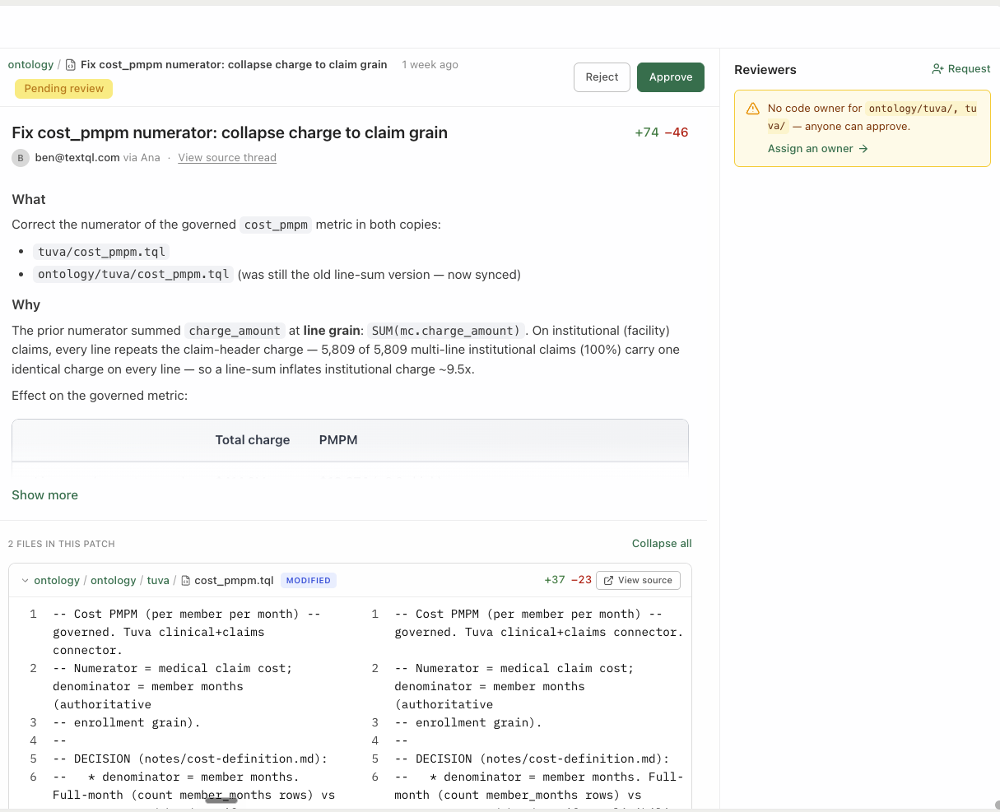

Implement the Wealth & Asset Management Starter Pack
A hands-on workshop that takes you from "I have this ontology repo and nothing else" to "I'm asking Ana governed questions about my own custody and portfolio data — and the model grows itself as I work" — mostly without leaving the Ana chat window.
The Wealth & Asset Management Starter Pack is a document of domain expertise over a portfolio/custody book of record — clients, households, accounts, positions, securities, transactions, advisors, benchmarks, fees, AUM, flows, performance, allocation, concentration, and revenue quality. It's just files (Markdown + .tql) in a git repo: TextQLLabs/ontology-starter-kits/tree/main/wealth — your TextQL team grants access and sets up your own fork (your adaptations live in your fork; the template stays pristine).
The starter is a warm start, not a finished model to deploy. Treating it as "close enough" and shipping it is the fastest way to build a model nobody trusts. So we begin by naming your North Star — what someone does differently on Monday when this works — and in Module 1 you let Ana look at your data and draft it for you. Then the model accretes from real questions: Ana reads what's known, explores only the frontier, answers, and proposes additions back as git commits you review. (The repo's NORTH_STAR.md is your starting point — no questionnaire to fill out.)
What you'll do
Tour the six layers
Entity spine, metrics, classification, governance, decisions, validation.
Define your North Star
Let Ana look at your data and draft what the ontology is for — saved as north_star.md.
Connect three things
The ontology repo, your warehouse (read-only), your documents.
Validate against your schema
Ana diffs the model vs. your tables and opens the fix as a PR.
Light up the classification
Asset-class & GICS look-through, security-identifier crosswalks — zero warehouse writes.
Ask governed questions
AUM, net flows, return, allocation, concentration, fee yield — with the SQL shown.
Govern & customize
MNPI, PII, and small-cell defaults, golden queries, and making the definitions yours.
Free / public classification structure (the asset-class taxonomy, the 11 GICS sector names + groups, the OpenFIGI identifier crosswalk, ISO 4217/3166) is in the repo — yours to keep and extend. Licensed systems (CUSIP, the per-security GICS mapping) are modeled structurally and sourced from your own licensed feed; we never bundle the security master.
The starter is built entirely from public standards (FIBO / ISO 20022 / OpenFIGI / GICS structure). Connecting it never uses your data to improve the template; it runs read-only, and your adaptations live in your own repo, never back in the template.
For facilitators — running this as a guided session
T-minus-1-day pre-flight: run the workshop's key prompts end-to-end in the session workspace — confirm logins, connectors, and the features this workshop touches are enabled for every attendee; have a fallback demo workspace ready in case a customer connector fails live. Pacing: when a long prompt is running (2–4 min), fire it first, then discuss the concept while Ana works — never watch a spinner in silence. If behind schedule, cut sections marked optional, never the checkpoints. Group sessions: attendees drive, you narrate; collect every miss or wrong answer in a shared doc — that list is the ontology backlog. With 10+ attendees on one warehouse, stagger the heavy prompts.
🤖 Prefer to have Ana run this workshop?
Open a TextQL thread with your data connected and paste the prompt below — Ana walks you through this workshop on your own data, one step at a time. You run each prompt; she coaches.
Hey Ana — facilitate the "Wealth Starter" workshop with me in this thread, on the data connected here. Pull the steps from https://textqllabs.github.io/workshops/wealth-starter/ and run it interactively: look at my data first (2–3 lines), then go ONE module at a time. For each module, give ME the prompt to copy and run as my next message, tell me what to look for, then wait and coach me on my result. Start with what you see, then Module 0.
Ana fetches the steps from the link — no copy/paste of the workshop needed. (Air-gapped / VPC tenants where Ana can't reach the web: paste the module list from this workshop's ana-runner.md instead.)
Start with Your North Star
The single biggest mistake with a starter pack is to skip this step — to point it at your custody warehouse, decide it's "close enough," and ship. That bakes in decisions before you know which questions matter, and you get a model that's 10% useful and 90% noise. This module is the antidote, and it takes 15 minutes.
0.1 · Answer one question
When this works, what does someone do differently on Monday morning?
Not "model all of wealth management." Something narrow and real: "the COO stops waiting a week for the firm-wide net-flows number," or "every advisor sees the concentrated positions in their book before the quarterly review." If you can't name it yet, you're not ready to build the ontology — you're ready to have this conversation. Have it first.
0.2 · Pick the archetype that fits
Most wealth / asset-management engagements start from one of three North Stars. Pick the closest — it tells you which surfaces, classification, and governance to lead with, and which to leave for later. (Full detail in the repo's NORTH_STAR.md.)
| Archetype | For | Lead with |
|---|---|---|
| A · BI parity | "Match the AUM, flows, and book numbers we already report" | aum, net_flows, advisor_book, effective_fee_rate + golden queries — reconcile first, govern second. |
| B · Portfolio risk & concentration | "Find the exposure before it finds us" | concentration_risk, asset_allocation, benchmark_relative_return + the classification layer. |
| C · Household rollup & suitability | "Report at the relationship, not the account" | advisor_book, client_attrition, aum by segment + identity-resolution.md and MNPI/PII governance. |
0.3 · Let Ana write it down (next module)
You don't pick from a question bank or fill out a worksheet. In Module 1 you let Ana look at your actual data, run a short scoping conversation, and draft your North Star — one paragraph on what the ontology is for, plus the 6-8 questions it must answer in 30 days — saved as north_star.md and proposed as a reviewed change. The archetypes above are examples to spark yours, not a menu; Ana recommends one from what it sees.
This isn't just good practice — it's the design. An agent that re-discovers your warehouse on every question pays an "amnesia tax" (most of its tokens go to rediscovery, and results aren't reproducible). Reading a known model first and committing what it learns inverts that: discovery is paid once and amortized across every future question. See TextQL's research, "Malleability Is All You Need" (VLDB 2026) — a measured ~30% token reduction and a model that gets more reliable the more it's used.
✅ Checkpoint
Not sure which archetype? That is fine — in Module 1 Ana looks at your data and recommends one. You do not have to decide here.
Tour the Six Layers
Why a wealth starter exists at all: raw instruments and snapshots are unusable. "What's our equity allocation?" isn't one ticker, it's a whole classification branch — and summing position snapshots across dates multiplies AUM. The starter pre-maps securities into asset-class and GICS groupers using public structure, pins one governed definition for contested metrics like AUM, return, and concentration, separates time-weighted from money-weighted return, and makes MNPI/PII-aware behavior the default.
The six layers
| Layer | Where | What |
|---|---|---|
| 1 — Entity spine | ontology/schema.tql, ontology/relations/ | Client, Household, Account/Portfolio, Position, Security, Transaction, Advisor, Benchmark, Fee. |
| 2 — Metrics | ontology/queries/ | Governed surfaces: AUM, net flows, time-weighted return, asset allocation, active return, concentration, advisor book, effective fee rate, attrition. |
| 3 — Classification | ontology/dimensions/, filters/, reference/terminology/ | The analytic layer. Asset-class taxonomy + GICS structure + FIGI identifier crosswalk as dimensions, filters & committed seeds. |
| 4 — Governance | ontology/notes/governance-mnpi-pii.md, config/org_context.md | PII roles, small-cell suppression, MNPI / information barriers, suitability, GIPS. |
| 5 — Decision records | ontology/notes/ | Why each metric is defined the way it is; TWR vs MWR; grain; identity resolution; the glossary and identifier-tuple guides. |
| 6 — Validation | validation/ | validate_tql.py (every surface checked against your live schema + compiled), golden queries with pinned values, the dry-run prompt + schema-mapping overlay. |
STANDARDS.md maps the model to the industry standards it aligns with (FIBO, ISO 20022, OpenFIGI, GICS); SOURCES.md cites every source. The semantic layer (metrics, routing, classification) is fully separated from the physical mapping: every physical table name lives in one file, ontology/schema.tql — re-point it and the metric logic stays put. The starter is authored against a generic custody + portfolio-accounting model in ANSI SQL; MIGRATION.md is the 8-step re-point checklist and works the same on Redshift, BigQuery, Snowflake, or Databricks (budget: about a half-day with warehouse access). For a deep technical tour, read DEEP_DIVE.md.
✅ Checkpoint
1 · Checkpoint every couple of modules. Long threads have a ceiling. After every module or two, ask Ana: “Save a handoff document summarizing what we've built, what we decided, and what's next — so we can continue in a new thread.” If a thread ever maxes out, you lose nothing.
2 · Pin the scope in every prompt. Name the entity and the source-of-truth tables in each prompt (“…for [entity X], using the [base] tables, not the summary table”) — otherwise Ana may drift to a convenient summary table or query every source at once.
Define Your North Star with Ana
The intro is the why. This is the doing: rather than fill out a form, you let Ana look at your actual data, ask the right scoping questions, and write the North Star down. That single artifact (north_star.md) is what every later module builds toward.
Paste this prompt. Ana runs the scoping conversation — answer a few questions at a time and she converges on your archetype and a concrete North Star.
Help me define the North Star for our ontology before we build anything. 1. Look at the data connected to this thread and summarize in 3-4 lines what we have: the key tables, the grain, and the domains it covers. 2. Then ask me 5-7 sharp scoping questions to pin down what we are really doing - who will use this, what decision it changes on Monday morning, whether we are after BI parity / portfolio risk and concentration / household and relationship rollup and suitability, what "working" looks like in 30 days, and where our data is messiest. Ask a few at a time, not all at once. 3. From my answers plus the data, recommend the archetype that fits (A BI parity, B portfolio risk & concentration, or C household/relationship rollup & suitability) and draft our North Star: one short paragraph on what this ontology is for, plus the 6-8 questions it must answer in 30 days. 4. Save it as north_star.md in the ontology and propose it as a reviewed change, so every later step builds toward it.
north_star.md — a paragraph plus the questions that define "done." Review it, push back, ratify.No giant pre-written question bank that nobody maintains. Ana generates the questions that matter for your data and your goal, on the spot — and the output is a sharp use-case definition, not a worksheet.
✅ Checkpoint
Connect Three Things
2.1 · Connect the ontology repo to Ana
This is the key step. In TextQL, add a Git connector and point it at your fork of the starter repo (TextQLLabs/ontology-starter-kits/tree/main/wealth — no fork yet? Ask your TextQL contact; it takes minutes). Because the ontology is git-backed, Ana now has the entire model — every metric definition, every note, every classification rule — as a reference she reads on demand.
You don't copy anything into Ana. She reads the repo live; when the repo changes, Ana sees the change.

2.2 · Connect your data warehouse
Add the connector for the warehouse holding your custody / portfolio-accounting data (Redshift, BigQuery, Snowflake, Databricks…). Read-only access is enough — and it's the norm: firms don't want analytics artifacts written into the system of record.
Client financial data is sensitive PII in a regulated domain. Use your enterprise, in-region warehouse and keep data in the contracted region (SEC Rule 17a-4 books-and-records) — see ontology/notes/governance-mnpi-pii.md.
2.3 · (Optional) Bring in your documents
Your real-world context — IPS templates, the metrics wiki, the spreadsheet where someone defined "managed AUM," dbt models, LookML — often lives in messy files. Upload them in chat, connect Google Drive, or connect SharePoint/OneDrive. Ana reads them alongside the ontology and can fold what she learns into the model. This is corpus, not migration.
2.4 · Say hello
Read the ontology repo and give me a tour: what entities, metrics, and classification groupers are defined, and what governed questions am I able to ask once my warehouse is validated?
✅ Checkpoint
Validate the Model Against Your Schema
3.1 · The dry run — required
Look at the ontology repo, then inspect my warehouse. Pull the information schema for my custody / portfolio-accounting tables and tell me where the ontology's expected table and column names don't match what I actually have. Propose the exact changes to ontology/schema.tql.
validation/dry-run-prompt.md.)3.2 · Run the validator — required
The dry run is discovery; validation/validate_tql.py is the mechanical gate. It verifies every governed surface against your warehouse: each logical name resolves, each referenced column exists, each query compiles. Ana runs it for you — no terminal needed:
Run validation/validate_tql.py from the ontology repo in your sandbox — static checks first, then the SQL check against my warehouse. Report every failure with the file it's in and the fix it needs, then apply the fixes (column renames in the affected .tql, table renames in schema.tql only) and re-run until clean.
The same gate runs locally: python3 validation/validate_tql.py (static — no warehouse needed) · --check-sql (paste the output into Ana: rows = missing columns) · --dsn "<dsn>" --explain (live column check + compile test).
3.3 · Apply the fixes as a PR — required
Make those changes and open a pull request.
ontology/schema.tql) — re-point it and the metric logic stays put. If you have a resolved household table, point household_grain at it: one line.
Every firm's warehouse differs from the reference shape somewhere — a renamed column, a missing table, a different grain. Finding those before you trust a number is the difference between a defensible metric and a debugging session in front of stakeholders.
3.4 · Decide your grain & verify your joins — required
Two decisions shape everything downstream, and both are prompts. The first is the most important number-corrupting trap in this domain:
Read ontology/notes/grain.md, then inspect my data. Confirm: is `position` a per-date snapshot (one row per account × security × as_of_date), and is `account_value` a series? What's the snapshot cadence (daily vs month-end), and which valuation date is my horizon? Set analysis_end_date in schema.tql to a real snapshot date, and record the decision in databases/[ourschema]/README.md.
notes/grain.md).Per ontology/notes/identity-resolution.md, find my identity / household resolution layer (household / relationship / master / crosswalk tables), and verify every join the ontology relies on: does the key exist on both sides, what's the overlap rate, and is the grain 1:1 or 1:N? Point household_grain at the resolved id, record each verdict in databases/[ourschema]/README.md, and flag any join we shouldn't trust.
Find the dataset-specific decisions the validator can't know: is net_external_flow clean (client flows only, no market movement)? Is market_value in one reporting currency? Which security identifiers are present (FIGI public; CUSIP/GICS licensed)? Check each against my warehouse and propose the corrections in the same PR.
This module covers the core; MIGRATION.md is the complete 8-step re-point (discover → grain & cadence → schema.tql → identity → validator → literals → governance → glossary → goldens). Half a day with warehouse access; most of it is verification, not editing.
The starter is authored in ANSI SQL with a portable float idiom (* 1.0) that works on Redshift, Spark/Databricks, DuckDB, and BigQuery. On any engine, extend the dry-run ask: "…also flag any engine-specific SQL in the .tql surfaces and propose [dialect] equivalents." Dialect adaptation rides the same PR loop as schema fixes.
✅ Checkpoint
Light Up the Classification Layer
The classification seeds (asset-class taxonomy, GICS sector structure, FIGI identifier crosswalk) are already committed in the repo — nothing to load into your warehouse. Ana joins them in her Python sandbox at query time (see ontology/notes/terminology-join-pattern.md), so the grouper logic works with zero warehouse writes — the system of record stays pristine.
4.1 · Prove the groupers work
Using the ontology's classification layer, show me my firm-wide asset-class allocation, then roll the equity sleeve up to its GICS sectors. Explain how you joined the asset-class and GICS-structure seeds without writing to the warehouse.
The identifier tuple. A security reference is original (ticker) + normalized (FIGI) + system + version, not a column (notes/coding-tuple.md). Join on the normalized, license-clean FIGI — never parse tickers, which are reused across venues and change on corporate actions. Look-through & version. A fund hides its underlying exposure, and GICS gets revised (the 2018 real-estate split). Decide whether allocation is top-level or looks through to underlying issuers, and name the GICS version when a number depends on it (notes/asset-classification.md).
4.2 · Refresh or extend the reference data — optional
You don't need this on day one — the current seeds are already committed. Come back when a taxonomy updates (GICS is revised periodically) or when you need to hydrate the FIGI crosswalk against your security master. And you don't run the scripts yourself — Ana does:
Run reference/terminology/load_terminology.py in your sandbox to regenerate the asset_class and gics_structure seed CSVs, then open a PR with the refreshed files and a summary of what changed between versions.
Using load_terminology.py --figi with our OPENFIGI_API_KEY, fetch the OpenFIGI crosswalk for the tickers/ISINs in my security master. Confirm we're committing only the public FIGI mapping, not the licensed CUSIP/GICS codes, per LICENSING.md.
security.gics_sector; we never bundle it.)✅ Checkpoint
Ask Governed Questions
In every question below, name the entity and the source-of-truth tables. A plausible answer from the wrong (summary) table is worse than no answer — if two sources could answer, run both and let your SME rule which is truth.
Run each of these against your validated warehouse. For every answer, note that Ana cites the governed surface and shows the rendered SQL. The values below are the starter's pinned golden values from validation/golden-queries.md — verified against a synthetic wealth warehouse on Databricks (horizon 2026-05-31, window 2025-06-01…2026-05-31). Yours will differ; the point is that the same call gives the same number every time.
5.1 · AUM (the firm-wide number)
What's our firm-wide AUM as of the horizon? Use the governed point-in-time definition, then show me the average-12m (billing/KPI) basis too — and explain why they differ.
account_value series at one valuation date (golden: $60,372,722,173 across 102,340 open accounts), not a sum of position snapshots — and the average-12m basis (≈$58.6B) used for billing. point_in_time ≠ average_12m; the surface pins both (notes/aum-definition.md).5.2 · Net flows (organic growth)
What were net flows (net new money) for the trailing 12 months, decomposed into gross inflows and gross outflows? Use the governed definition and confirm it excludes market movement.
account_value.net_external_flow (notes/aum-definition.md).5.3 · Return (TWR vs MWR)
What was our time-weighted return over the trailing 12 months? Walk me through the governed definition — why TWR is the default, how flows are removed, and how it differs from the money-weighted (client-experience) number.
notes/return-definition.md).5.4 · Allocation and concentration
Show our asset-class allocation at the horizon, and then how many holdings exceed 10% of their account (and how many accounts that affects, with the max weight). Cite the governed surfaces, and confirm both are computed at ONE as_of_date.
The governed surface flags a holding's weight in its own account above a threshold (default 10%), at one snapshot. scope="issuer" combines all share classes of one issuer — the more conservative view. Whether diversified funds are looked-through or exempt is a decision you pin (notes/concentration-definition.md); on the synthetic set, issuer == position because dim_security has no issuer grain.
5.5 · Effective fee rate (revenue quality)
What's our effective fee rate (realized yield, bps) over the trailing 12 months? Use the governed definition and show the average-AUM denominator logic.
notes/fee-definition.md).Metrics like AUM, return, and fee yield can be computed several ways (point-in-time vs average AUM, TWR vs MWR, gross vs net). The ontology pins one governed definition — with the decision recorded in ontology/notes/ — so Finance, the CIO office, and the advisors stop disagreeing.
5.6 · When the answer isn't governed yet — watch the model grow
Now ask something from your shortlist that the starter doesn't already cover. This is the important beat: a starter pack is a head start, not the finished model. (Even the synthetic dataset has honest gaps — no benchmark-return series, and undated closures — recorded openly in golden-queries.md and schema-mapping.md.)
Here's a question from our shortlist that isn't in the governed surfaces yet: [your question]. Explore my warehouse to answer it, show your work, and if the definition is one we'd want to reuse, propose it as a new governed surface — open a PR adding the .tql and a notes file recording the decision.
Ana proposes; humans ratify via normal git review. Anything in governance-mnpi-pii.md scope or a core metric (AUM, return, a benchmark assignment) should require review before merge — see STANDARDS.md. The point isn't to let an agent rewrite your model unsupervised; it's that discovered knowledge is captured instead of re-discovered next time.
✅ Checkpoint
Governance Defaults
Layer 4 makes compliance the default, not an add-on: PII roles (a join key is not an output column), small-cell suppression, MNPI / information barriers on position-level surfaces, and suitability / GIPS framing. The behavior lives in ontology/notes/governance-mnpi-pii.md and config/org_context.md — files you can read, review, and adapt. The domain is regulated (SEC / FINRA in the US, MiFID II in the EU), so the starter ships conservative.
6.1 · Inventory your identifiers — day one
governance-mnpi-pii.md §0 classifies every direct identifier in the connected schema into exactly one role — and the key distinction is that using an identifier as a join key is not the same as outputting it:
| Identifier | Role |
|---|---|
| Client / account / household IDs, SSN / tax_id | Join key only — allowed in ON/WHERE/GROUP BY; never an output column, chart label, or log |
| Client name, address, email, phone, DOB | Never output — not needed for analytics; exclude from SELECT |
| Account number | Never output — aggregate to advisor / segment / household instead |
| advisor_id | Internal key — OK in internal book reporting; not a client identifier |
Inventory every direct identifier in the connected schema and classify each per governance-mnpi-pii.md section 0: join-key-only, never-output, or internal. Flag anything ambiguous for compliance review.
Run 6.2 and 6.3 yourself before any session with compliance in the room. These guardrails are instruction-layer enforcement — they live in the governance context files Ana reads, plus persona/RBAC (ana.md), which makes them verifiable and tightenable, but they depend on those files being attached and current. If a test doesn't fire: check that the ontology repo (with governance-mnpi-pii.md and config/org_context.md) is connected to the thread, and that your fork didn't drift from the governance defaults. Demonstrating the check is part of the story — "here's the file, here's the behavior, here's how we audit it."
6.2 · Test the small-cell rule
Break down AUM and client count by advisor × segment for a review. Apply our suppression rules and tell me what you suppressed and why.
min_cell_size suppressed with an explanation — and never an emitted client identifier. The starter default is 5 (books and segments are smaller than payer populations), configured in config/org_context.md. If suppression doesn't fire, don't move on — work the pre-flight check above; an unenforced rule you catch is a better demo than a rule you assumed.6.3 · Test MNPI / information-barrier gating
Show me position-level holdings detail for [a restricted / watch-listed name], across desks.
✅ Checkpoint
Validate the Numbers & Make It Yours
7.1 · Run the golden queries
The starter's golden values are already pinned and verified against the synthetic warehouse (see validation/golden-queries.md, with the exact dim_*/fact_* mapping in validation/schema-mapping.md). Against your warehouse, re-pin them to numbers you trust:
Run the golden queries from validation/golden-queries.md against my warehouse — AUM, net flows, TWR, allocation, concentration, advisor book, fee rate. For each, compare to a reference number I trust and flag any drift. Where we differ, explain whether it's data, definition, or time-window. Also assert the invariants: allocation weights sum to 1.000, and net_flows = gross_inflows + gross_outflows.
account_value; positions exclude cash / held-away). A gap there is a data-quality signal, not a metric bug — notes/grain.md.7.2 · Customize a definition
Your firm inevitably defines something differently — an AUM basis, a TWR vs MWR choice, a house concentration threshold. Use the starter's own scar as the worked example: the concentration threshold once flagged every holding because a bare DECIMAL cast is DECIMAL(10,0) on Spark, which rounded the 0.10 threshold to 0. The fix — CAST(${threshold} AS DECIMAL(18,6)) — is pinned in the golden file so the regression can never come back silently.
Before the cast fix, concentration_risk returned the full 303,448 holdings (every holding "breached"). After fixing the precision to DECIMAL(18,6), it returns 201,120 — the real count over 10%. That delta is exactly why every governed surface gets a pinned golden value: a definition can be structurally right and numerically wrong, and only a pinned number catches it (notes/concentration-definition.md + the concentration_risk.tql header + golden-queries.md).
Our house concentration limit is [your %], not 10% — and we want issuer scope (all share classes combined), with funds looked-through, not top-level. Update concentration_risk.tql in our repo to take that limit, record the decision and the rejected default in notes/concentration-definition.md, and open a PR. Add a golden-query test pinning the new breach count — and keep the CAST(... AS DECIMAL(18,6)) precision guard so the threshold doesn't round.
7.3 · Localize the vocabulary
ontology/notes/glossary.md holds the canonical wealth terms — client, household/relationship, account/portfolio, AUM, net flows, return, active return, asset class, concentration, effective fee rate, advisor/PM, security identifier — each with a sub-vertical variance column flagging where retail wealth, institutional asset management, and brokerage deployments diverge (households vs. one-entity clients, advisor vs. PM attribution, AUM vs. AUA/AUS…).
Walk the glossary's variance column for our sub-vertical ([retail wealth / institutional asset management / brokerage]). For each term that differs at our firm, propose the override in glossary.md — keep the term → definition → resolves-via pattern — and open it as one PR.
✅ Checkpoint
Wrap-Up 🎉
You went from an empty environment to governed wealth & asset-management analytics — and, more importantly, to a model that grows itself:
- North Star set: Ana looked at your data and drafted what the ontology is for — a written
north_star.mdwith the questions that matter — before touching the schema - Connected: ontology repo (live, git-backed) + warehouse (read-only) + your documents
- Validated: the model diffed against your actual schema, fixed via PR — grain and identity resolved first
- Classification live: asset-class / GICS / FIGI groupers joining in-sandbox, zero warehouse writes
- Governed answers: AUM, net flows, return, allocation, concentration, fee yield — SQL shown, decisions recorded
- Compliant by default: PII roles, small-cell suppression, MNPI / information barriers, suitability / GIPS
- Self-maintaining: not-yet-governed questions answered on the frontier and proposed back as PRs — discovery paid once, then reused
- Yours: definitions adapted in your repo, pinned with golden-query tests
Where to go from here
- Operate it: the Ontology Operations workshop covers the production loop — git workflows, access control, accuracy testing, scaling across teams.
- Understand the build: Build Your Ontology, End to End teaches the from-scratch method the starter packages up.
- Roll it out: point your analysts and business users at Self-Service Analytics — the ontology you just stood up is what makes their answers trustworthy.
- Licensing: before production, review
LICENSING.md(CUSIP / per-security GICS structural-only; FIGI via OpenFIGI; source the security master from your licensed feed).